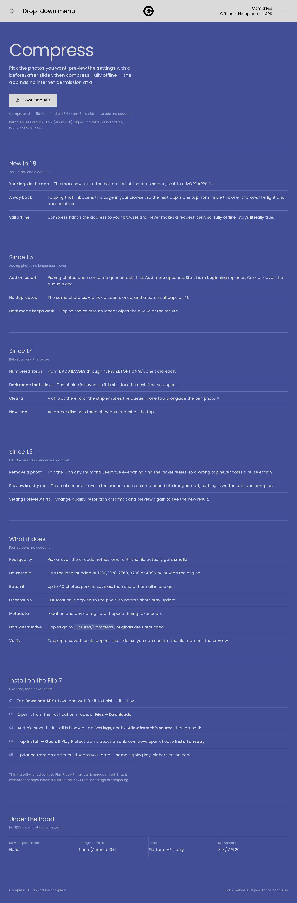
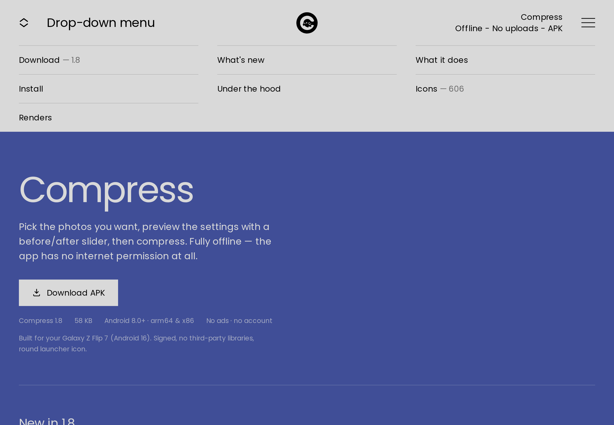
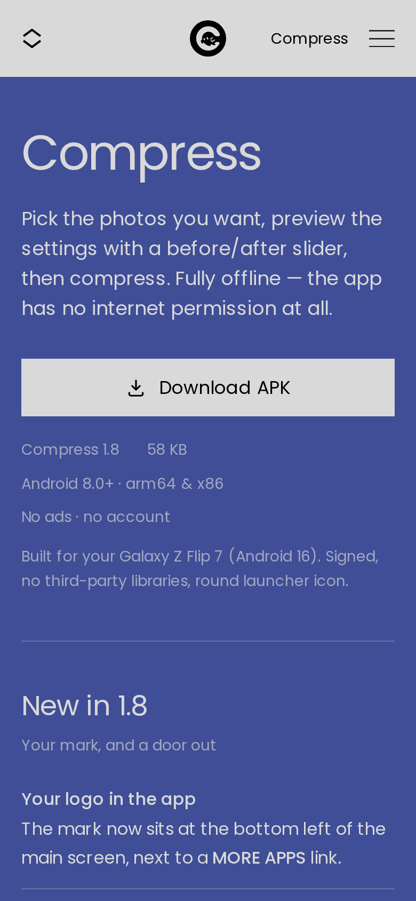
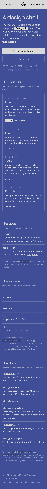
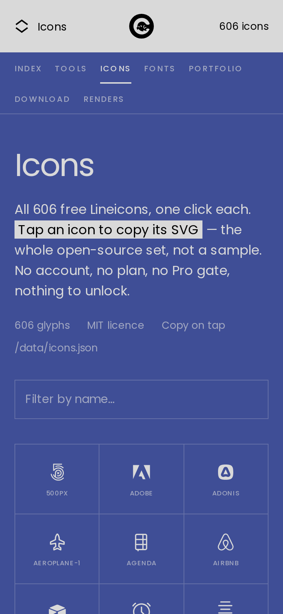
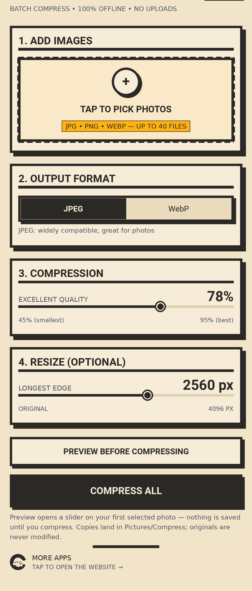

Renders
Captured from the page itself in headless Chromium — 1300×900 on a desktop, 390×844 on a phone. Tap any image to open it full size.
The two app screens further down are design renders drawn from the app's own dp values, not device captures: there is no emulator on the machine that builds this site.
On a desktop — 1300×900
The band, the centred mark and the indigo field, as frame 6-27 draws them.





On a phone — 390×844
The label cannot share the row with the mark at that width, so the band keeps the chevrons as the menu affordance.




The icons page — still on the old palette
606 free Lineicons, unchanged by this pass. It has not been ported to the new band-and-field look yet.


The mark
Rendered straight from assets/logo.svg, apart from any page.
Inside the app — 411×960
Design renders of the Android app, scrolled to the bottom of the main screen. The app still wears the 1.8 look.

